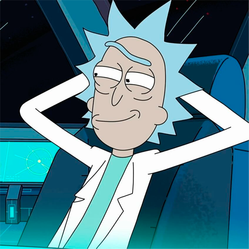
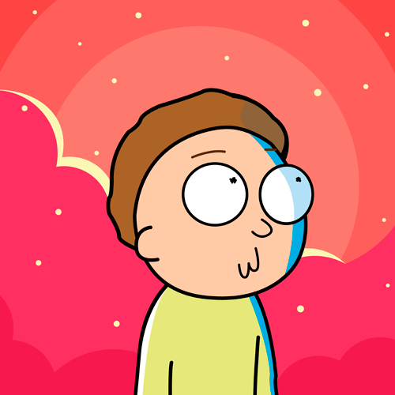
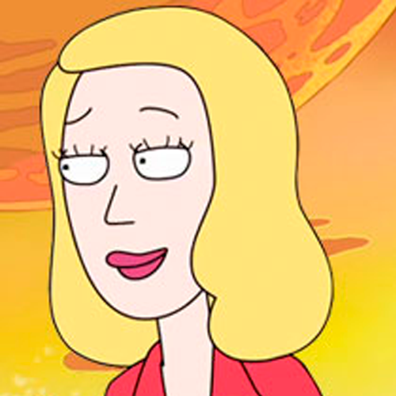
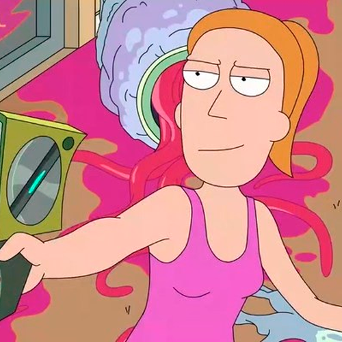

Смотри онлайн как Рик и Морти часто проводят время вместе, хотя родные и близкие не представляют, что общего между самоуверенным стариком с ярко выраженными алкогольными пристрастиями и слабохарактерным подростком с огромной кучей комплексов. Но, несмотря на абсолютную непохожесть, нетипичные друзья находят общие темы для разговоров и общие пункты назначения для будущих приключений. Рик постоянно разрабатывает новые, безумные эксперименты и использует доверчивого Морти, страдающего от всех сложностей подросткового периода, в качестве подопытного. Но паренек не жалуется, ведь ему нравится быть рядом с дедом, которого он называет исключительно по имени. Морти считает, что время не властно над выдающимся интеллектом ученого и его безумным влечением к путешествиям. Ему нравится слушать философские изречения, хотя зачастую они наполнены цинизмом по отношению ко всем известным и анонимным врагам социопата и мизантропа. А их Рик сумел нажить немало, ведь постоянно самоутверждался за счет других людей и демонстрировал собственное превосходство в плане сомнительных научных достижений. Но у старика нет лишнего времени, чтобы рассуждать о врагах. Его зовут вперед безумные приключения, которые он разделяет вместе с другом.
Rick and Morty
Рик прекрасно видит, что помощник и лучший друг имеет большие трудности с коммуникацией среди сверстников. Это заметно даже тем зрителям, которым нравится смотреть мультсериал «Рик и Морти», но безумный ученый не спешит помогать мальчику и подсказывать ему, как нужно общаться с девочками, чтобы не проводить все вечера в унылом одиночестве. Рик уверен, что подростку придется дойти до всего самостоятельно, иначе останется бесхребетными, безынициативным и скучным. Взрослеть всегда тяжело, но Морти придется проявить характер и доказать, что он годится не только на роль подопытного в стенах не самой стерильной лаборатории деда. Рик не особо печется о собственной репутации и считает, что лучшие достижения за историю существования человечества получались случайно и не нужно стремиться к перфекционизму круглосуточно. Рику не свойственна самокритика и самобичевание. Он убежден, что все и всегда делает правильно, а если кому-то из родственников не нравятся его поступки, то они могут развернуться и смотреть в иную сторону.
Рик не скрывает, что привычного человеческого мира ему слишком мало для получения новых эмоций и впечатлений. Но это давно не проблема, ведь ученый сумел изобрести генератор порталов, который легко открывает двери между тысячами альтернативных реальностей. И для путешествий по новым уголкам вселенной сумасшедшему старику и его вечному спутнику не нужны визы и документы. Только отчаянная готовность рискнуть всем ради очередного научного прорыва, так что новые увлекательные и непредсказуемые события сериала «Rick and Morty» в русской озвучке Сыендук станут невероятной находкой для истинных поклонников диких историй о параллельных мирах. Временами зрителям может показаться, что Рик сознательно пользуется собственным другом для неприятных миссий или в качестве контейнера для хранения семян из далеких планет, но старик любит Морти и дорожит его преданностью. Он бы не решился путешествовать по неизведанным просторам в одиночку, и хотя Морти оказывается бесполезным в любой сложной ситуации, но зато с ним можно поговорить в дороге и усовершенствовать на нем безграничное чувство юмора и острого сарказма.
-

Рик Санчез — Безумный алкоголик и невероятно талантливый ученый. Всегда носит с собой самодельное устройство для открытия порталов в параллельные реальности. Отличается любовью к цинизму и скептицизму. Носитель высокого интеллекта и черного юмора. Владеет боевыми искусствами и быстро определяет слабые и сильные стороны противника.
-

Морти Смит — Внук, лучший друг и неизменный спутник Рика во всех его путешествиях. Закомплексованный подросток, легко попадающий под чужое влияние. Заикается и переживает за то, как он выглядит в глазах окружающих людей. Страдает от скрытой агрессии, но успешно справляется с подавлением негативных чувств.
-

Бет Смит — Мать Морти и родная дочь Рика. Работает хирургом-ветеринаром и пытается спасти распадающийся брак. Смотрит сквозь пальцы на выходки Рика, но просит его поберечь детей, которые ходят за дедом по пятам. Иногда сомневается в той реальности, которая ее окружает, но затем проблемы на работе и личной жизни быстро отвлекают Бет от печальных мыслей.
-
Джерри Смит — Отец Морти и Саммер, зять Рика, муж Бет, 34—35 лет. Как и Морти, наивен и глуповат, сильно комплексует из-за этого. Подшучивает над женой по поводу того, что она «не настоящий хирург». Очень любит фильм «Титаник». Безработный, о чём ему периодически напоминают все члены семьи фразами «найди работу». Некоторое время работает рекламным агентом. Интересуется гражданским правом. Недолюбливает Рика (если не сказать больше), и это чувство взаимно.
-

Саммер Смит — Старшая сестра Морти, 17 лет. Типичный подросток с соответствующим кругом интересов. Иногда путешествует с дедом и младшим братом и нередко выручает их. Считает выходки своей семьи «глупыми». Некоторое время работала в лавке у дьявола. Очень привязана к своему телефону. Считает свое тело некрасивым.
О мультфильме
«Рик и Мо́рти» (англ. Rick and Morty) — американский комедийный научно-фантастический анимационный сериал для взрослых, созданный Джастином Ройландом и Дэном Хармоном и выпускаемый в рамках блока Adult Swim на телеканале Cartoon Network. Премьера сериала состоялась в декабре 2013 года; второй сезон вышел в 2015 году. 1 октября 2017 года завершился третий сезон, и в мае 2018 года было объявлено о выпуске ещё 70 эпизодов при неопределённом количестве сезонов. В мае 2019 года была объявлена дата выхода четвёртого сезона — ноябрь 2019. Первые пять эпизодов вышли в свет в ноябре-декабре, остальные — после перерыва, 3—31 мая 2020 года. Также в мае было объявлено о продлении сериала на пятый сезон (без указания конкретных дат). 20 июня 2021 года вышел пятый сезон, 4 сентября 2022 года состоялся премьерный показ шестого сезона. В январе 2023 года Adult Swim разорвали отношения с Ройландом из-за обвинений в домашнем насилии и объявили о рекасте его ролей. Седьмой сезон стал первым, где главных героев озвучил не Джастин Ройланд. Премьера седьмого сезона состоялась 15 октября 2023 года. В декабре 2023 года авторы сериала сообщили, что сценарий восьмого сезона дописан и скоро начнутся съемки; параллельно идет создание сценария для девятого сезона, но выход восьмого сезона немного откладывается из-за забастовки, но зато идут планы на аниме-сериал этого мультсериала.
Сериал посвящён злоключениям циничного безумного учёного Рика Санчеса и его наивного, капризного и неуверенного в себе внука Морти. Сериал, выросший из хулиганской анимационной пародии на франшизу «Назад в будущее», получил чрезвычайно высокие отзывы критики, особо отмечавшей его оригинальность, креативность и чувство юмора.